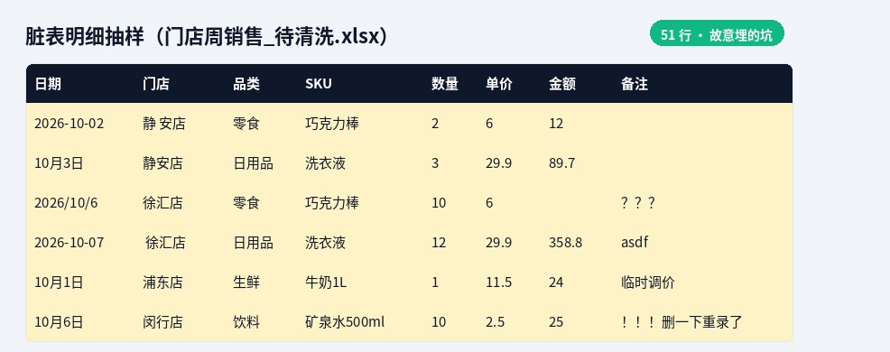
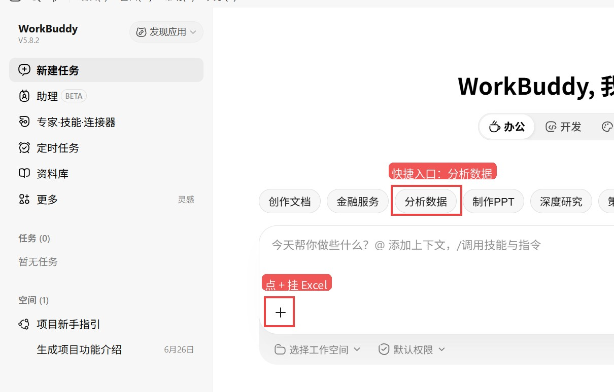
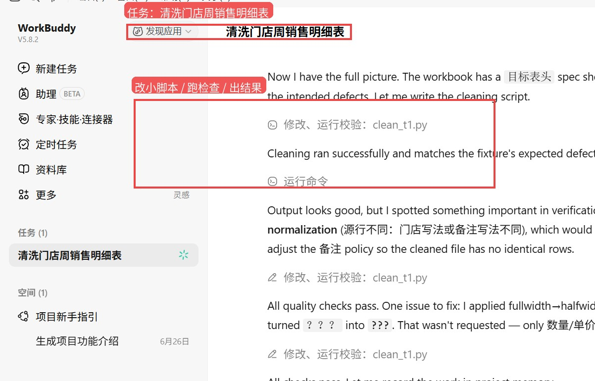
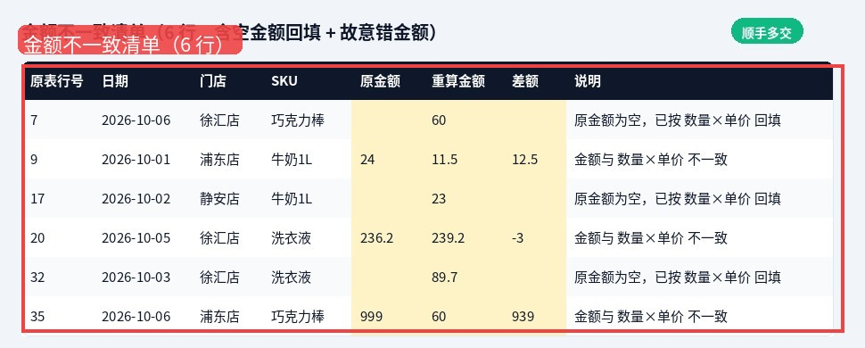
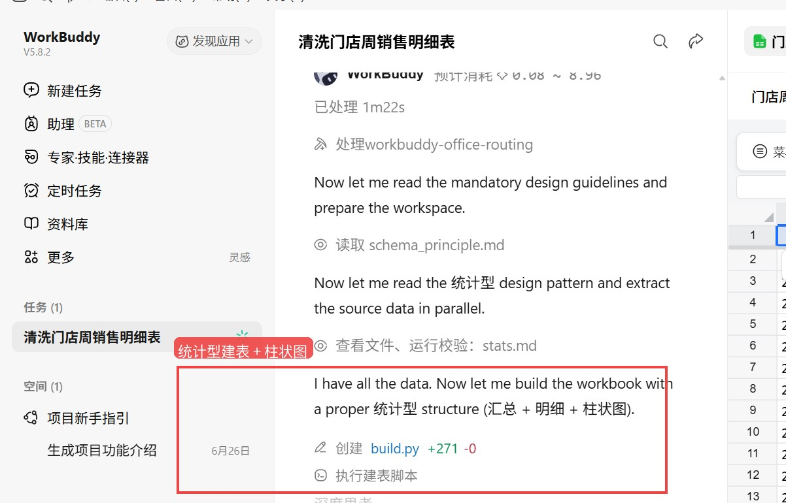
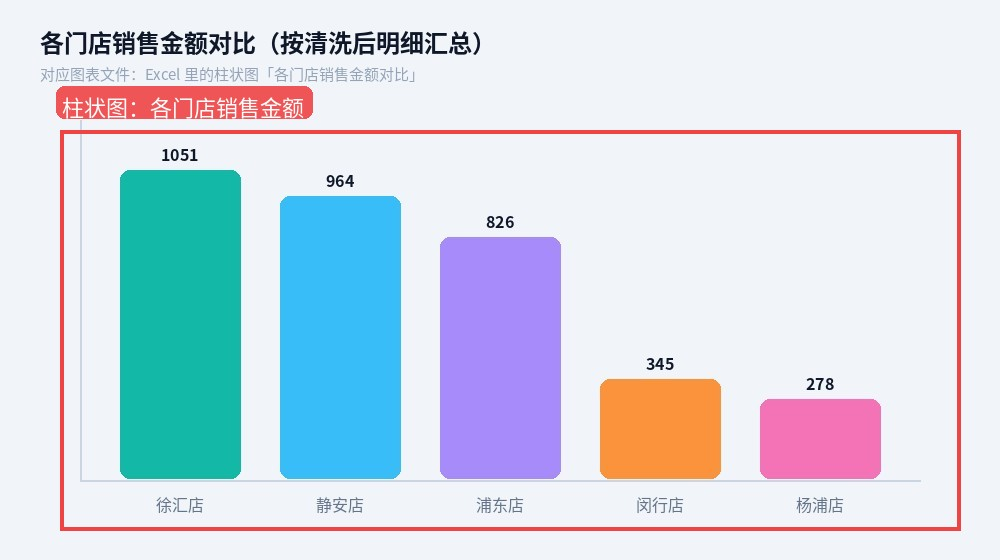

有一天，朋友发来一张门店周销售明细，配文就一句：「又要加班洗表了」。日期有的写成 2026/10/1，有的写成「10月3日」；门店名一会儿「静安店」，一会儿中间多空格；金额空着、算错、还掺着全角数字。他手工洗过不止一回，眼睛先花了。
我是老李。没跟他讲概念，直接说：你装个 WorkBuddy V5.8.2 试试——免费档就行，模型条目标签选 快速 · Deepseek-V4.1-Flash。工作目录先写成这样，我们一起过一遍：
C:\Users\laoli\projects\workbuddy-excel\\
他甩过来的 Excel：门店周销售_待清洗.xlsx，大约 51 行脏明细。结论先放前头：主清洗大约 3 分钟，51→48；日期统一、门店归一、金额纠偏、汇总表都齐；另开一趟大约 1–2 分钟，Excel 里真插进了柱状图。我跟他说——可以交差了。

样例表抽样：混日期、门店空格变体、空金额、备注垃圾（黄底为脏点）
朋友这张表的坑，跟日常周报表几乎同款：
• 完全重复行 3 条；
• 日期格式混杂（斜杠、横杠、「×月×日」、未补零）；
• 空金额若干 + 故意算错 3 行（+12.5 / -3 / 写死 999）；
• 数量/单价里藏全角数字；
• 门店名变体（「静 安店」「静 安店」、首尾空格）；
• 备注里塞 asdf、？？？、null 这类垃圾。

真屏摄：WorkBuddy V5.8.2 主界面；红框分别框住「分析数据」与「+」挂 Excel
我让他打开界面：选「办公」、点「分析数据」，输入框旁边的 + 挂上 Excel。别让它猜业务规则——提示词把「去重、日期 YYYY-MM-DD、按门店对照归一、全角转半角」写清楚，并要求另存新文件，别覆盖原表。
【广告位1】

真屏摄：红框框住任务标题，以及改小脚本 / 跑检查 / 出结果
从点发送到主结论，大概花了 ~3 分钟。它不是只会嘴上说步骤：用 openpyxl 读表，写出可再跑一遍的 clean_t1.py，一边改一边用小脚本检查。更关键的是——它主动翻了工作簿里的「目标表头」，还有事先写好的「故意埋的坑」说明页，等于先把规则说明书翻一遍再动手。
红框内五张表：销售明细 / 金额不一致清单 / 门店×品类汇总 / 门店对照 / 清洗说明
出来的文件：outputs\门店周销售_已清洗_T1.xlsx，里头 5 张表：
• 销售明细：51→48，日期全 YYYY-MM-DD，门店归到标准五店，全角清零，金额按数量×单价重算，差额为 0；
• 金额不一致清单：6 行（3 空回填 + 3 故意错金额），跟表里埋的坑对得上；
• 门店×品类汇总：数量合计 / 金额合计，和明细加总对得上；
• 门店对照 + 清洗说明：7 种门店变体变更有账可查。

红框内即「金额不一致清单」：空金额回填与错金额差额一目了然
本来「重算金额+不一致清单」「门店×品类汇总」我打算让他分两次问。结果一次对话就顺手多做完了——对「还要不要我再改几刀」特别友好：朋友这趟——洗得干净、几乎不用再改、能直接交差。
有个细节我挺喜欢：备注里的垃圾（asdf 那些）它故意留着，并在说明里写清楚——因为提示词没要求清备注，乱删可能误伤业务信息。像个靠谱助理：该洗的洗，没吩咐的先请示。

真屏摄：红框框住统计型建表 + 柱状图相关步骤（build workbook / build.py）
我让他接着问：「能出图就出图，不能出图就写清办公室同事能照做的步骤」。它选了 A 出图：新文件 outputs\门店周销售_图表_T4.xlsx，里面真插了 Excel 柱状图——实测标题是「各门店销售金额对比」。另有门店销售汇总（含 SUMIF）、门店×品类交叉表、明细金额用公式。

红框内柱状图：按清洗后明细汇总的各门店销售金额（对应图表文件里的图）
出图这趟：图有了、几乎能交差，只扣了一点小分。扣那一点，主要是收尾时它还在找本机 Excel/LibreOffice 做公式缓存重算——不影响图表对象已经在文件里。打开就能看见图。
【广告位2】
这趟怎么看：
• 主清洗：洗干净了，几乎不用再改，能交差
• 金额纠偏（含在主清洗里）：同上，能交差
• 汇总（含在主清洗里）：同上，能交差
• 出图：图有了，能交差（收尾多绕了半分钟找本机 Office）
判定：可直接交差。免费档 + Deepseek-V4.1-Flash，在这份「办公室味」脏表上，已经不像演示片，更像能交周报的活。
这工具对不会写公式的办公室用户更友好，但提问方式决定上限。我跟朋友说的用法是：
1. 把任务写清楚：去重、日期格式、门店对照、要不要动备注，一条一条列；别只说「帮我洗一下表」。
2. 先挂文件：用输入框旁的 + 附上 xlsx；工作目录里放对照表/目标表头更好，它会主动读。
3. 主动要检查用的表：比如「金额不一致清单」「清洗说明」。有清单，交差前你自己也敢签字。
4. 金额仍要抽查：空金额、故意错金额这趟它对上了，但关键数字别 100% 外包大脑——抽几行心算一下。
5. 没说的它可能留着：备注垃圾、奇怪批注，不要求就可能保留。想清，就写进提示词。
6. 适合周报清洗场景：格式统一、门店归一、汇总+简单柱状图，这种固定套路特别合适；别指望一句「分析下经营」它就替你做战略。
提示词可以长这样（大意即可，按你的表改字段名）：
请打开「门店周销售_待清洗.xlsx」。 清洗「销售明细」：去重；日期统一 YYYY-MM-DD； 按「门店对照」归一门店名；全角数字转半角； 用数量×单价重算金额，不一致的单独列一张清单； 再做门店×品类汇总。另存新文件，不要覆盖原表。 做完说明：原行数、去重后行数、改了哪些门店名。
① 复杂权限/宏/多工作簿连环引用，这趟没测——周报脏表场景过了，不等于财务大盘也能一键。
② 备注策略偏保守：你不说清，垃圾可能还在。
③ 出图收尾会多绕半分钟找本机 Office 做公式缓存，耐心等一下，或自己打开 Excel 让它重算。
④ 截图是 Windows 真客户端；你机器字体/主题可能不同，流程同款。
⑤ 路径对外一律写成 C:\Users\laoli\projects\workbuddy-excel\\，别把真实本机用户名晒出去。
WorkBuddy 5.8.2 + Deepseek-V4.1-Flash，在朋友这份 51 行门店周销售脏表上：约 3 分钟洗完，还顺手交出不一致清单与汇总；约 1–2 分钟再塞进柱状图。结果扎实，判定可直接交差。如果你也每周跟这种「办公室味」Excel 较劲，值得按上面的问法试一趟——挂上文件，把规则写全，留下检查清单，金额再抽查一眼。
关注公众号
老李的AI江湖
供应链老登的 AI 江湖，专聊能上手的
点关注顺手转发点个赞
下期见
WorkBuddy Excel清洗 门店周报 实测 办公AI 老李的AI江湖